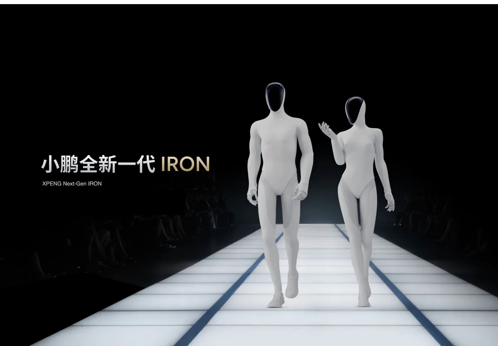
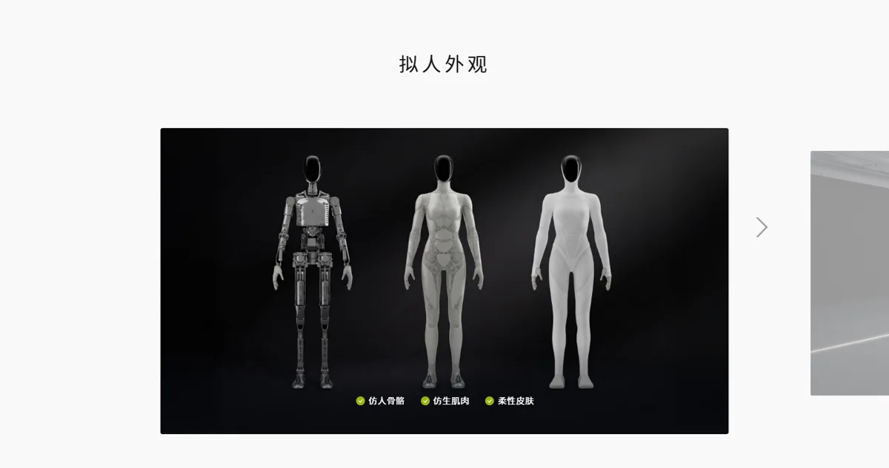
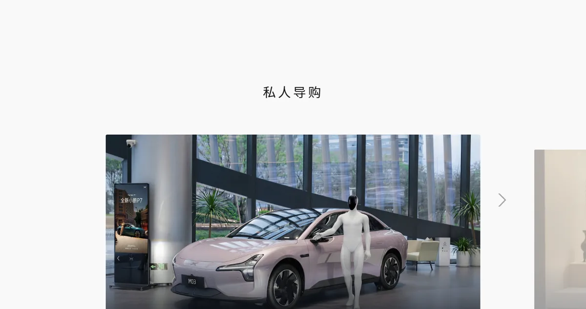

小鹏 IRON小鹏汽车（XPeng，NYSE: XPEV / HKEX: 9868）机器人业务
中国版“特斯拉 Optimus”：小鹏把汽车的芯片、大模型和制造体系复用到人形机器人，IRON 主打“最拟人”，3 颗自研图灵芯片 2,250 TOPS；机器人业务 2026-08 独立融资超 9 亿美元、估值超 63 亿美元，9 月产线启用，计划年底量产、2027 年对外交付。
一页结论
01公司介绍
| 项目 | 内容 |
|---|---|
| 母公司 | 小鹏汽车，总部广州，美股与港股两地上市S3 |
| 官网 | xiaopeng.com/airobot.htmlS5 |
| 负责人 | 董事长兼 CEO 何小鹏S1S3 |
| 机器人业务融资 | 2026-08-24 首轮超 9 亿美元，投后估值超 63 亿美元；IDG 领投，高榕创投跟投，腾讯、阿里战略投资；小鹏继续控股并表S1S2 |
| 集团战略 | 汽车、机器人、全球化是三大增长曲线S3 |
| 产品 | IRON 人形机器人（此前有四足机器人等原型）S3S5 |

02公司战略
小鹏把 IRON 当作“物理 AI”战略的核心载体：同一套芯片、模型、制造体系，同时服务汽车、Robotaxi 和机器人。
- 全栈自研：何小鹏称机器人硬件必须由软件设计驱动，只有软硬件同步开发才能让硬件匹配所运行的 AI 模型S4
- 先商业空间、后家庭：首批部署在门店和园区，做导购、导览、巡逻；长期目标是成为人的生活伙伴S3
- 数据飞轮：量产与真实部署形成“数据—模型—应用”的循环；高拟人形态便于利用人类日常行为数据S3
- 开放生态：计划向全球开发者开放 IRON 的 SDKS4
03产品定位与产品线
| 项目 | 内容 |
|---|---|
| 定位 | “致力于打造最拟人的人形机器人”，面向多场景的通用人形平台S1S5 |
| 外形 | 身高约 170 cm；仿人骨骼、仿生肌肉、全包覆柔性晶格皮肤；头部 3D 曲面屏S2S4S5 |
| 首批场景 | 私人导购、智慧导览、专业导巡S3S5 |
| 价格 | 未公布；小鹏称单台毛利率将显著高于电动车（媒体报道）S6 |
| 交付 | 2026 年底量产，先自用；2027 年对外交付S1S3 |

04主要功能与技术路线
能源
固态电池（2025 年发布时披露）S4

05解决方案与场景
06商业模式
自用先行的好处是：门店天然是展示与获客场景，又能在可控环境里积累数据和运维经验（分析意见）。
07上下游供应链与渠道
08主要客户与落地
09营收与财务
10落地痛点
11近期动态
12潜在风险分析意见
| 风险 | 表现 | 可能程度 |
|---|---|---|
| 量产延期 | 车企造新品类的爬坡普遍慢于计划（分析意见） | 中 |
| 母公司资源分配 | 汽车业务竞争激烈，机器人投入可能受影响（分析意见） | 中 |
| 场景单一 | 首批以导购导览为主，工业价值待验证（分析意见） | 中 |
| 车企扎堆入局 | 已有 10 多家中国智能汽车厂商进入机器人领域S2 | 中 |
“可能程度”为基于现有公开信息的判断，不是量化预测。
13综合结论分析意见
优势
- 自研芯片与端侧大模型
- 汽车级制造与质量体系
- 门店网络与品牌
劣势
- 尚无交付
- 价格未公布
- 导购场景价值未证明
机会
- 集团内自用冷启动
- 海外市场
- 开发者生态
威胁
- Tesla Optimus 与其他车企
- 头部机器人公司的出货规模
对 AI 产品团队的启示
- 平台复用是大公司做新品类的最大优势：同一套芯片、模型与制造，摊薄在汽车和机器人上。
- 用自有场景做冷启动：门店既是试验场，也是展示窗口，降低了找第一批客户的难度。
- 业务独立融资可以“既控股又借力”：引入外部资本与估值锚，同时保留并表与控制权。
- “拟人”是交互产品的取舍：导购、陪伴场景重亲和力，工业场景重效率，产品定义要先选清楚。
信息缺口
以下信息未找到可靠的公开来源，本报告不做推测。
- IRON 售价与单台成本
- 实际量产数量与良率
- 机器人业务收入与亏损
- 核心零部件外部供应商
- 宝钢试点结果
来源
A 官方 · B 权威媒体或第三方 · C 社区（仅用于口碑与线索）。访问日期均为 2026-11-02。
- S1 · B小鹏机器人业务完成约60亿元融资，IRON人形机器人将于2026年底量产腾讯新闻 · 2026-08-27
- S2 · B小鹏机器人自己走下产线，人形机器人竞赛来到“量产关”观察者网 · 2026-09-08
- S3 · AXPENG's humanoid robot IRON leaves its production line on its own feet小鹏汽车（瑞士新闻室） · 2026-09-09
- S4 · BXPENG unveils next-generation humanoid robot IRON, to begin mass production by end of 2026盖世汽车 · 2025-11-05
- S5 · A小鹏 AI 机器人 IRON 官网页小鹏汽车 · 2026-11-02 访问
- S6 · B小鹏启动IRON人形机器人量产，特斯拉Optimus进展迟缓澎湃新闻 · 2026-09
- S7 · B何小鹏：IRON人形机器人将于2026年底量产，月产能目标上千台网易新闻 · 2026-03-20
- S8 · BChina's XPENG Plans Humanoid Robot Mass Production by 2026eWeek · 2026-05